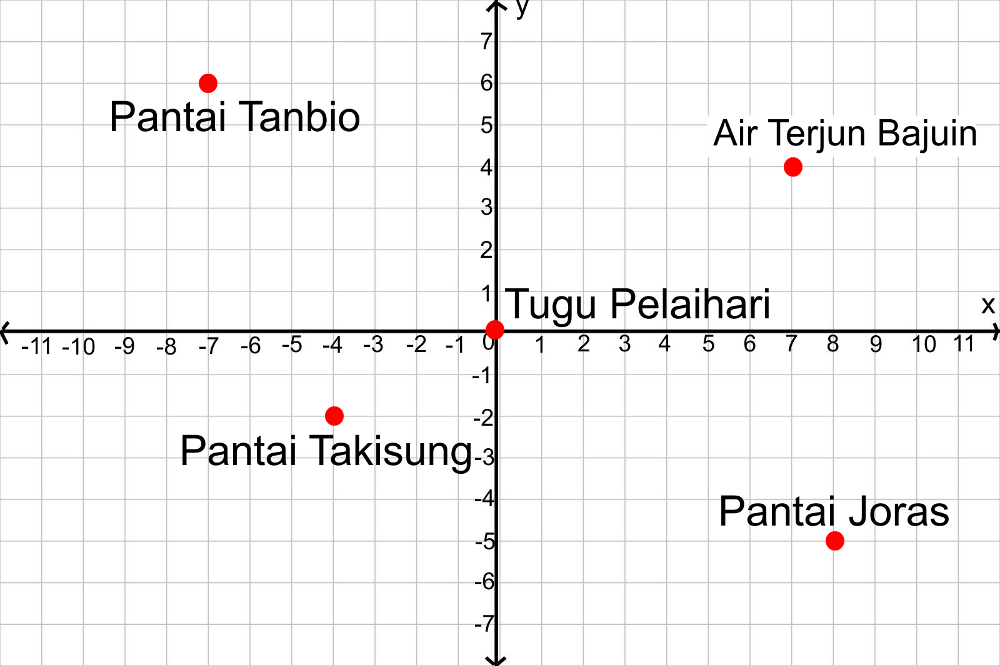

Setelah mengetahui bagaimana cara menentukan posisi tempat pada bidang koordinat, selanjutnya kita akan mempelajari bagaimana menentukan titik bidang koordinat pada bidang koordinat dengan 4 bagian kuadran.
Masalah 1.1 : Perhatikan gambar berikut ini!
Kalimantan Selatan memiliki banyak tempat wisata alam terutama di Kabupaten Tanah laut. Peta Kabupaten Tanah Laut digambarkan ke dalam bidang koordinat memiliki titik Air Terjun Bajuin, Pantai Tanbio, Pantai Takisung, Pantai Joras dan Tugu Pelaihari. Jika Tugu Pelaihari dijadikan sebagai titik awal (0,0), maka tempat wisata tersebut tersebar pada bidang koordinat seperti dibawah ini.

- Apa yang dimaksud dengan 4 bagian kuadran dalam sistem koordinat?
- Bagaimana cara menentukan posisi titik Air Terjun Bajuin, Pantai Tanbio, Pantai Takisung dan Pantai Joras pada bidang koordinat?
- Bagaimana cara penulisan titik koordinat yang tepat?
 Berdasarkan gambar bidang koordinat Gambar 1.6, Tentukan
Berdasarkan gambar bidang koordinat Gambar 1.6, Tentukan
- Posisi Titik Air Terjun Bajuin pada bidang koordinat dengan penulisan titik koordinat yang tepat,
- Posisi Titik Tanbio pada bidang koordinat dengan penulisan titik koordinat yang tepat,
- Posisi Titik Takisung pada bidang koordinat dengan penulisan titik koordinat yang tepat,
- Posisi Titik Joras pada bidang koordinat dengan penulisan titik koordinat yang tepat.
Posisi titik koordinat Kartesius ditulis dalam pasangan berurut (X,Y). Bilangan X
menyatakan jarak titik itu dari sumbu-Y dan bilangan Y menyatakan jarak titik itu dari
sumbu-X.
Berikut ini adalah contoh penulisan dengan titik koordinat: A
Sumbu-X dan sumbu-Y membagi bidang koordinat menjadi 4 bagian kuadran, yaitu :
- Kuadran I : koordinat-x positif dan koordinat-y positif
- Kuadran II : koordinat-x negatif dan koordinat-y positif
- Kuadran III : koordinat-x negatif dan koordinat-y negatif
- Kuadran IV : koordinat-x positif dan koordinat-y negatif
Mari kita simak animasi berikut ini untuk menentukan posisi titik berdasarkan 4 kuadran koordinat.
Kerjakan latihan soal berikut ini!

Jawablah pertanyaan dibawah ini berdasarkan gambar diatas dengan mengisi kolom yang kosong dibawah ini!
- Titik A terletak pada( )
- Titik B terletak pada( )
- Titik C terletak pada( )
- (1,-3) terletak pada titik
- (-2,-5) terletak pada titik( )
- Sebutkan titik apa saja yang terletak pada kuadran IV
- Sebutkan titik apa saja yang terletak pada kuadran II
Kemudian klik tombol dibawah ini untuk mengecek jawabanmu
Kemudian klik tombol dibawah ini untuk mengecek jawaban anda
Kemudian klik tombol dibawah ini untuk mengecek jawaban anda
Kemudian klik tombol dibawah ini untuk mengecek jawaban anda
Kemudian klik tombol dibawah ini untuk mengecek jawaban anda
Kemudian klik tombol dibawah ini untuk mengecek jawaban anda
Kemudian klik tombol dibawah ini untuk mengecek jawaban anda